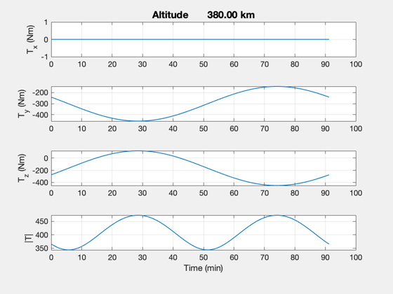

Compute the torque due to the fusion engine magnetic dipole in Earth orbit
The engine is aligned with the velocity vector. The dipole is assumed to be along the X axis.
%-------------------------------------------------------------------------- % See also: BDipole, RVFromKepler, JD2000, U2Q, Plot2D, TimeLabl, Cross %-------------------------------------------------------------------------- %-------------------------------------------------------------------------- % Copyright (c) 2016 Princeton Satellite Systems, Inc. % All rights reserved. %-------------------------------------------------------------------------- % Define orbit %------------- rMag = 6378.165 + 380; % Radius in km p = Period(rMag); angle = linspace(0,2*pi); n = length(angle); dT = p/n; z = zeros(1,n); [r,v] = RVFromKepler([rMag;0.5;0;0;0;0]); uV = Unit(v); jD = JD2000; % Define array of magnets in fusion engine %----------------------------------------- uBody = [1;0;0]; % Body vector of dipole i = 3.2e6; % Current A a = 0.5; % Radius (m) nC = 6; % Number of coils m = pi*a^2*i*nC*uBody; % Dipole % Compute over orbit using a loop %-------------------------------- torque = zeros(3,n); for k = 1:n q = U2Q(uBody,uV(:,k)); b = QTForm(q,BDipole( r(:,k), jD )); torque(:,k) = Cross(m,b); end [t,tL] = TimeLabl((0:n-1)*dT); yL = {'T_x (Nm)' 'T_y (Nm)' 'T_z (Nm)', '|T|'}; s = sprintf('Altitude %12.2f km',rMag - 6378.165); Plot2D(t,[torque;Mag(torque)],tL,yL,s); fprintf('DFD Dipole: %g\n',m(1)); fprintf('Max torque: %g Nm\n',max(Mag(torque))); %-------------------------------------- % $Date$ % $Id: 7d40507ce324ee4fd5abeb53b37189151e69913d $
DFD Dipole: 1.50796e+07 Max torque: 472.198 Nm